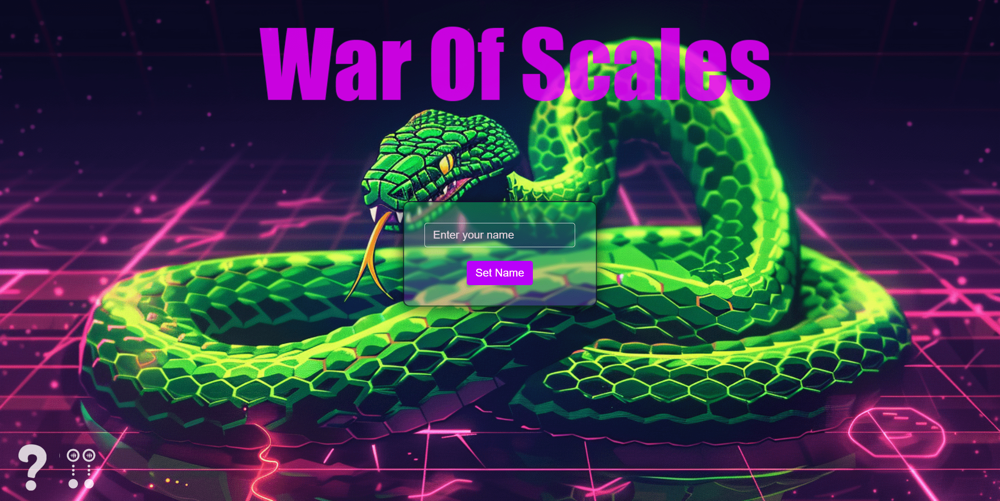
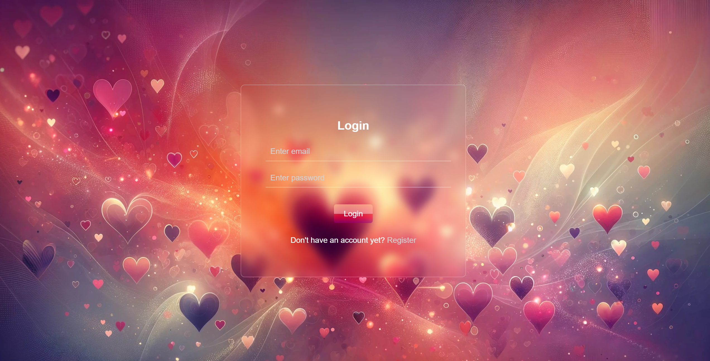
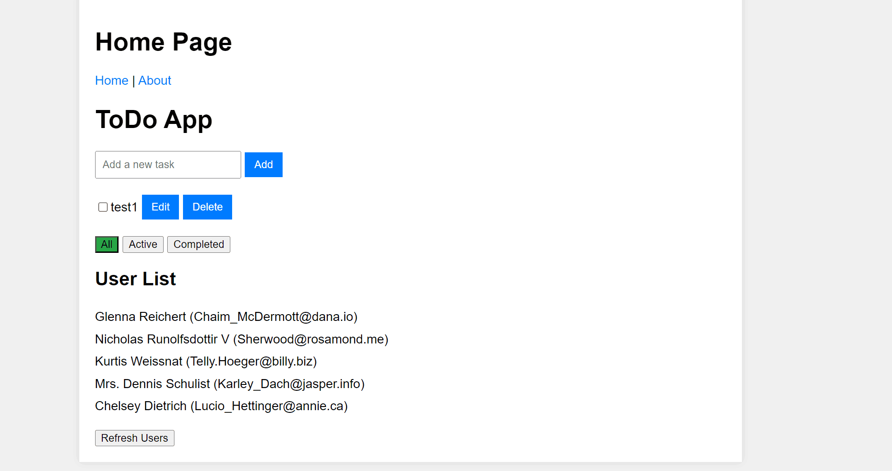
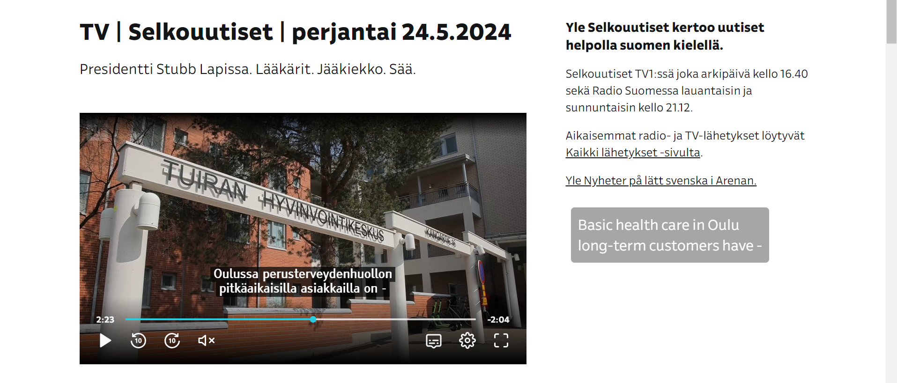
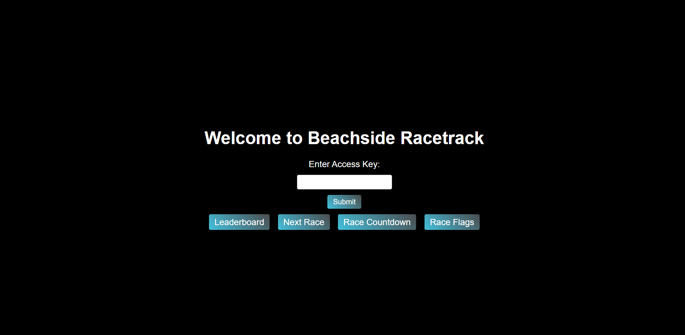
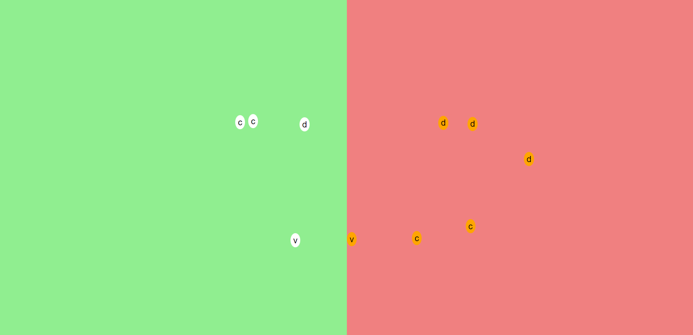

My Info
Hi there! Welcome to my portfolio. My name is Denys, and I'm a junior full-stack software developer. I'm excited to share my journey with you!
I am an enthusiastic and driven individual with a background in digital art and a degree in engineering, currently transitioning to a career in software development. While new to programming, I am learning fast, and I hope this portfolio site proves it. I have great motivation to improve and progress. Currently, I am studying at kood/Sisu Coding School.
On my portfolio site you will find detailed sections showcasing my journey and skills:
- Projects: A showcase of my work, highlighting my skills and experience through various software development projects.
- Education: Information about my academic background, including my current studies at kood/Sisu Coding School.
- Contacts: Details on how to get in touch with me for collaboration, inquiries, or other reasons.
Skills & Tools: Tools and technologies I am proficient in, as well as the skills I am continuously developing.

GoLang

JavaScript

HTML5

CSS3

GoLand

VS Code

PostgreSQL

SQLite

React

Node.js

GitHub
Projects
-
War of Scales - Multiplayer Web Game 
War of Scales is a multiplayer web game inspired by the classic snake games, enhanced with resource gathering and competitive elements. Supporting up to four players, each participant controls a snake-like character, collecting buffs and competing in real time—all rendered with DOM elements. The game includes a unique scoring system, smooth animations, real-time chat, and keyboard controls, ensuring engaging, responsive gameplay. Built with Express and Socket.io for real-time functionality, players can join sessions via a unique link and battle it out for victory. A singleplayer mode featuring AI opponents also offers diverse challenges, including varying difficulty levels for bots. Please note that my GitHub repository for this project is private as requested by Kood/Sisu. Interested parties should contact me via email, as provided in the contact section, to request access.
GitHub Repository -
Match-Me Web 
Match-Me Web is a full-stack recommendation platform designed to connect users based on shared interests, preferences, and characteristics. Built using React for the frontend and Go (Golang) for the backend, it leverages PostgreSQL for data persistence. The application supports user registration, profile creation, and viewing of tailored recommendations powered by a custom matching algorithm. Users can connect and chat in real-time with WebSocket implementation, ensuring seamless communication. The system also includes location-based filtering and secure session management with JWT. Please note that my GitHub repository for this project is private as requested by Kood/Sisu. Interested parties should contact me via email, as provided in the contact section, to request access.
GitHub Repository -
Dot-Js Frontend Framework 
Dot-Js is a lightweight, JavaScript-based front-end framework that allows developers to create dynamic user interfaces with ease. Built from scratch, it emphasizes simplicity and gives full control over application architecture, minimizing JavaScript fatigue. It features robust state management, customizable DOM manipulation, and seamless event handling to simplify the development process without the need for extensive third-party dependencies. The framework includes comprehensive documentation, covering architecture, installation, and best practices, ensuring it's accessible for both beginners and advanced users. A demonstration project showcases the framework's capabilities, highlighting its efficiency and ease of use for everyday applications. Please note that my GitHub repository for this project is private as requested by Kood/Sisu. Interested parties should contact me via email, as provided in the contact section, to request access.
GitHub Repository -
Double Subtitles Chrome Extension 
A Chrome extension that translates subtitles in real-time from Finnish to English. I developed this extension to aid my own Finnish language learning. The extension captures subtitles from video elements, translates them using the unofficial Google Translate API, and displays them as a movable overlay on the video. Users can customize the overlay's appearance, including background color, text color, text size, and opacity, with settings saved between sessions. The extension has been tested and works on Yle Areena and Yle, though it may not function on other sites due to differing subtitle presentation methods.
GitHub Repository -
Beachside Racetrack Real-Time System 
Beachside Racetrack's real-time system manages races and informs spectators efficiently. This project delivered an MVP to handle race preparation, control, and information dissemination using Node.js and Socket.IO. Key features include configuring race sessions, announcing upcoming races, starting and controlling races, recording lap times, and displaying real-time leaderboards. The system caters to various user personas, including employees, race drivers, and spectators, with secure access for different roles. Employee interfaces are protected by access keys, ensuring only authorized personnel can manage race operations. The system reduces reliance on staff through technology while providing accurate and timely information to all users. Please note that my GitHub repository for this project is private as requested by Kood/Sisu. Interested parties should contact me via email, as provided in the contact section, to request access.
GitHub Repository -
Introduction to the JavaScript 
As I started learning JavaScript, I completed various tasks that range from basic DOM manipulation to complex object-oriented programming. These tasks include standalone functions and interactive applications, such as creating a chessboard, handling keyboard input, and managing dynamic lists of sports teams. Please note that my GitHub repository for this project is private as requested by Kood/Sisu. Interested parties should contact me via email, as provided in the contact section, to request access.
GitHub Repository -
Literary Lions Forum

A web forum developed in Go, designed to support discussions for the "Literary Lions" book club. This platform allows users to create posts, categorize them, interact through comments, and use like/dislike features. It leverages SQLite for data management and includes Dockerization for efficient deployment. Registered users can authenticate with encrypted passwords, create and comment on posts, and filter content by categories and user preferences. The project was a group effort, where I primarily focused on backend development, and was completed with minimal use of JavaScript. Please note that my GitHub repository for this project is private as requested by Kood/Sisu. Interested parties should contact me via email, as provided in the contact section, to request access.
GitHub Repository -
Train Network Pathfinder

A command-line application written in Go that simulates the movement of trains between stations along the shortest possible routes. This project reads a network map from a file, represented as a graph using an adjacency list, and identifies the minimal number of turns required to move trains from a start station to an end station. The pathfinder uses a modified BFS algorithm to find the shortest paths, filtering for unique routes, and assigns trains to the best paths based on a scoring system. The simulation iteratively moves trains until all reach their destination, displaying each movement turn-by-turn. This project demonstrates efficient pathfinding and train scheduling in a fixed-block rail system. Please note that my GitHub repository for this project is private as requested by Kood/Sisu. Interested parties should contact me via email, as provided in the contact section, to request access.
GitHub Repository -
Cars Viewer web application

A Go-powered web application designed to showcase detailed information about various car models, manufacturers, and categories. The application interacts seamlessly with a Cars API, fetching and displaying data dynamically. It features advanced filtering and search options, and side-by-side car model comparisons. Users can click on specific car models to retrieve additional details, displayed in an intuitive format. The project also includes CSV data export and advanced sorting capabilities, providing a user-friendly interface and efficient server-side processing for an enhanced browsing experience. The project was completed without (or with absolute minimum) use of the JavaScript, as was required by the task. Please note that my GitHub repository for this project is private as requested by Kood/Sisu. Interested parties should contact me via email, as provided in the contact section, to request access.
GitHub Repository -
Art Decoder/Encoder Web Interface

A Go-powered web application for encoding and decoding text based on a custom compression technique, designed for handling repetitive patterns in ASCII art and text. This web interface for the art-decoder task allows users to submit encoded strings for decoding or convert text back into an encoded format for easy sharing. The tool ensures input validation, checking for balanced brackets and correct format. With a responsive design, the interface is visually appealing and easy to use. The project combines Go's efficiency with web technologies to provide an interactive experience for text-based art manipulation. The project was completed without (or with absolute minimum) use of the JavaScript, as was required by the task. Please note that my GitHub repository for this project is private as requested by Kood/Sisu. Interested parties should contact me via email, as provided in the contact section, to request access.
GitHub Repository -
Command-line Art Encoding/Decoding Tool

A versatile Go application for encoding and decoding strings based on a custom compression technique, ideal for handling repetitive patterns in ASCII art and text. This tool validates input, ensuring balanced brackets and proper format, and supports single-line and multi-line operations. Users can decode compressed strings from command-line arguments, files, and output results to the console or files. Similarly, it can encode input strings, supporting both single-line and multi-line formats, with outputs to the console or files. This project enhances string manipulation skills and provides efficient processing for text-based art. Please note that my GitHub repository for this project is private as requested by Kood/Sisu. Interested parties should contact me via email, as provided in the contact section, to request access.
GitHub Repository -
Itinerary Prettifier

A command line tool in Go which can be used to transform text-based flight itineraries into customer-friendly formats. The tool reads itineraries, converts airport codes to names using a CSV lookup, and formats dates and times into more readable forms. The tool includes error handling to manage missing files and malformed data. Additionally, it supports dynamic column orders in the airport lookup file and offers optional output formatting to highlight key information. Please note that my GitHub repository for this project is private as requested by Kood/Sisu. Interested parties should contact me via email, as provided in the contact section, to request access.
GitHub Repository -
Introduction to the Go Programming Language

Start of my software development career. Involves various tasks ranging from learning basic concepts of Golang to exploring complex algorithms. These tasks consist of standalone functions and two group tasks: an Encryption Tool and an Entry Organizer Tool. Please note that my GitHub repository for this project is private as requested by Kood/Sisu. Interested parties should contact me via email, as provided in the contact section, to request access.
GitHub Repository